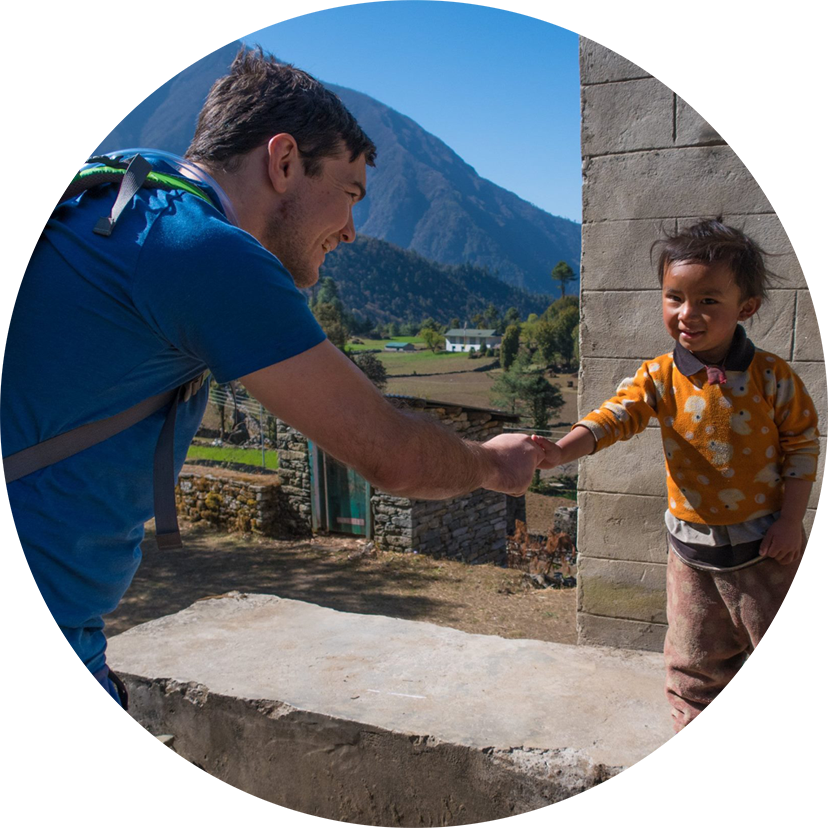

The Good Part has been created to assist myself and others in contributing to a better world. By enabling passive donations from the one action of signing up to an exchange through this website we can create a positive momentum together for many years to come.
My name is Troy and I became attracted to the Cryptocurrency space in 2016 after reading about proof-of-work and building my own mining system. My passion for the space has only continued to grow since then.
Shortly after mining my first coins I had to learn about exchanges. Unfortunately I did not know anybody else who understood Cryptocurrency and as such nobody benefitted from my trades outside of the exchanges themselves as no affiliate links were used.
Thinking about the positive causes that my fees could have been contributed to and learning about altruistic Crypto projects such as The Pineapple Fund combined with my reading of Stoicism led to the creation of The Good Part.
I can be found on Twitter @TroyHOZ or @TheGoodPartOrg and contacted via support@thegoodpart.world
Please bookmark thegoodpart.world for future reference and thank you for your time.
-Troy Hulm